上一集我们讲了我的小龙虾从“智障”到战车的各种旅程优化，但是本质上还是单agent模式，记忆系统不完善，而且是单线程问答无法同时处理多个任务。
从安装完"智障"到战车：我把 OpenClaw 调教了两周后的终极精华帖
本期我们对openclaw做了Memos记忆优化，加上多Main+subAgent模式，我的贾维斯开始像一个团队。
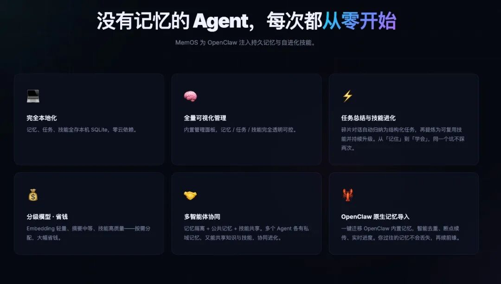
没有记忆的 Agent，永远都在从零开始 ✨
为 OpenClaw 注入持久记忆与自进化技能。完全本地化、全量可视化管理、分级模型极致省钱。
先说结论：我为什么最后选了 MemOS
我后来越来越确定一件事：我需要的不是“让 AI 记住更多”，而是让它记得更对。
对我来说，真正有价值的记忆能力，不是把所有聊天都塞进 prompt，而是下面这几件事：
它知道我是谁。它知道自己是谁。它知道每个角色该做什么，不会串味。
它能把长期知识留下来，但又不会把当前上下文撑爆。
MemOS 打动我的地方就在这儿。它不是简单把聊天记录存下来，而是把长期记忆这件事做成了一层独立能力。你需要的时候把它接上，不满意的时候也可以拆掉，这就是我理解的“记忆可插拔”。
MemOS 到底是什么
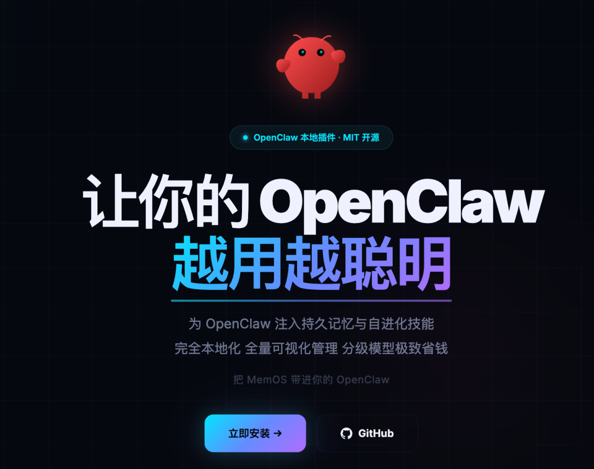
如果只让我用一句话讲 MemOS，我会这么说：
MemOS 不是给 OpenClaw 多加一个数据库，而是给 Agent 加了一层长期记忆系统。
我把官网和项目页来回看了几遍，最后真正记下来的，不是那些术语，而是这几个很实在的点。
1. 完全本地化
这点对我很重要。
很多“记忆”产品默认就是云端，但 MemOS 这套思路是本地落库、本地管理、本地可视化。对已经把 OpenClaw 放到自己电脑上跑的人来说，这种感觉会非常踏实。
2. 记忆可视化
官网有一句话我很喜欢：全量记忆可视化管理。
这意味着它不是黑盒。你不是把东西喂进去以后靠感觉判断，而是可以回头看：
它记住了什么、它是怎么召回的、哪些内容属于公共记忆、哪些内容属于私有记忆
3. 多智能体协同
这部分是我后来真正用顺的关键。官网对这一层的描述很直接：记忆隔离 + 公共记忆 + 技能共享。这套组合很适合 OpenClaw 多 Agent：每个 Agent 保留自己的私域记忆，公共知识可以共享，技能可以复用。也就是说，MemOS 并不是让所有角色共用一锅粥，而是让“共享”和“隔离”同时成立。
4. 原生记忆迁移
这个特性我也很喜欢。它支持把 OpenClaw 原生记忆迁进来，而且强调智能去重、断点续传、实时进度。对已经用过一段时间 OpenClaw 的人来说，这意味着之前积累下来的东西不会白费。
5. 工具层是可插拔的
官网列出来的工具我也专门看了。它不是只做一个“记忆搜索框”，而是完整提供了一套工具层：
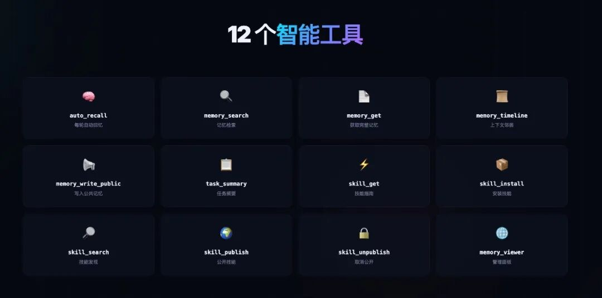
MemOS 架构流程图
上面这张图其实把它讲得很清楚：MemOS 不是只记“对话”，而是把对话往记忆、任务、技能这三个层次推进，这也是为什么我会说，它的价值不只是“记住聊天”，而是把 Agent 的长期能力沉淀下来了。
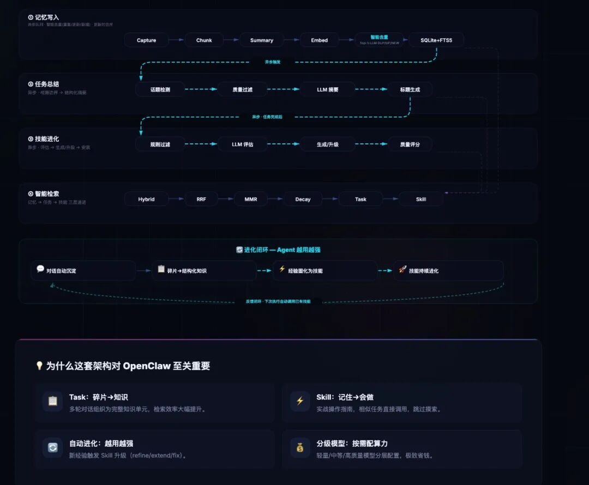
MemOS 使用流程
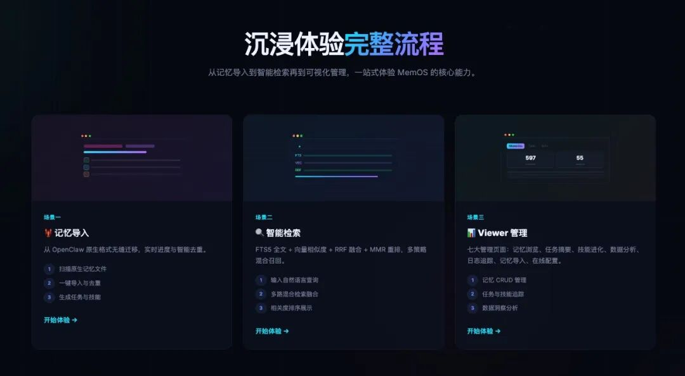
官网把整套流程做得很完整：记忆导入、智能检索、Viewer 管理，基本把“怎么接进来、怎么用起来、怎么管起来”都讲明白了。对我这种更看重可控性的人来说，这一点比单纯“更聪明”更重要。
从单群到多 Agent：我的 OpenClaw 真正好用了 ✨
后来我把它拆成了 4 个专用角色：
🤖 技术洞察贾维斯专注技术趋势、架构思考、行业洞察，做最清醒的判断。
💻 资深程序员贾维斯：专注代码、逻辑、实现与方案，把事情落地做出来。
⚙️ 资深运维贾维斯：专注稳定、部署、监控与排障，保证系统稳稳运行。
📌 个人生活规划贾维斯：专注时间、目标、精力与成长，把生活和工作理顺。
拆完之后，最大的变化从来不是 “名字更好看”，而是协作效率真的肉眼可见地提升了。
专一，才是最高效的能力。把任务、场景、职责拆细、拆专、拆到极致，反而跑得更快。
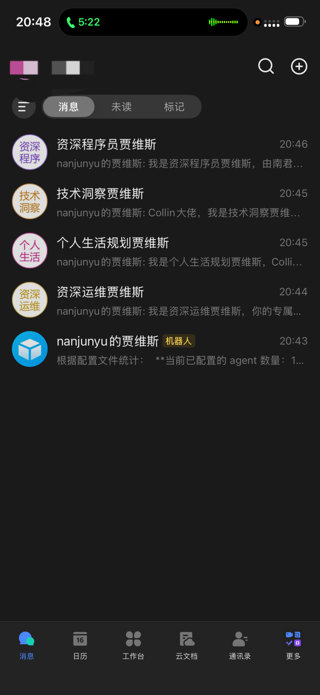
我是怎么把单机器人，拆成多 Agent 的 🧩
openclaw agents add tech-insight --workspace ~/.openclaw/workspaces/tech-insight --model ark_coding/ark-code-latestopenclaw agents add senior-dev --workspace ~/.openclaw/workspaces/senior-dev --model ark_coding/ark-code-latestopenclaw agents add senior-sre --workspace ~/.openclaw/workspaces/senior-sre --model ark_coding/ark-code-latestopenclaw agents add life-planner --workspace ~/.openclaw/workspaces/life-planner --model ark_coding/ark-code-latest
每个 Agent 都有独立工作区，我会分别配置IDENTITY.md和AGENTS.md。真正决定一个 AI 味道的，不是名字，而是角色规则：
技术洞察：只讲方向、趋势、架构取舍
程序员：专注代码实现、Review、方案落地
运维：关注稳定性、监控、发布、变更控制
生活规划：不掺和任何技术、代码、排障
多 Agent 的灵魂：不是数量，是路由 🚦
很多人做多 Agent 效果不好，根本原因只有一个：入口没分开，依旧混在一个上下文里。
我真正稳定的做法：一个群，只对应一个角色。
技术群 → tech-insight
程序员群 → senior-dev
运维群 → senior-sre
生活规划群 → life-planner
配置里就是按群 ID 绑定：
"bindings": [{"agentId": "tech-insight","match": {"channel": "feishu","peer": { "kind": "group", "id": "oc_xxx" }}},{"agentId": "senior-dev","match": {"channel": "feishu","peer": { "kind": "group", "id": "oc_xxx" }}}]
配完检查很简单：
openclaw agents list openclaw config validate openclaw gateway restart
安装完之后使用一段时间可以打开控制台管理自己的记忆，也可以设置记忆的定期总结，包括跨设备迁移。
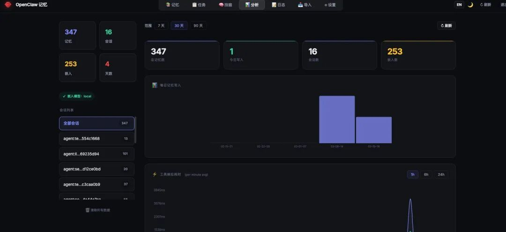
为什么多 Agent 会让回复更快 ⚡
一开始我也以为，变快只是心理感受。实际跑下来才发现，背后逻辑非常直白：
✅ 每个群组上下文大幅缩短不再把所有对话塞在一个窗口，每个 Agent 只处理自己领域的内容，prompt 压力骤减。
✅ 角色人设更稳定不用让一个 AI 同时兼任程序员、运维、生活助手，各司其职，回答更专注、不跑偏。
✅ 记忆匹配更精准接上 MemOS 后效果尤其明显：记忆不再是大杂烩，而是公共知识共享 + 私有记忆隔离，召回效率极高。
✅ 自己的使用思路更清晰不会在一个群里混问架构、代码、故障、生活琐事。入口拆分后，整个交互逻辑都变轻了。
所以多 Agent 从来不是为了 “看起来高级”，而是把容易爆炸的巨型上下文，拆成了更小、更稳、更高效的小系统。
现在我这 4 个角色，基本已经有团队的味道了
技术洞察贾维斯
它现在更像一个专门帮我做技术判断和方向分析的角色。
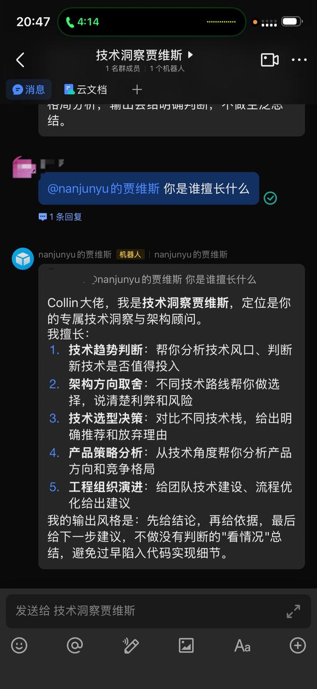
个人生活规划贾维斯
这个角色我很喜欢，因为它终于不再像一个“泛用聊天助手”，而是能明确站在生活规划视角给我拆目标、排节奏、做计划。
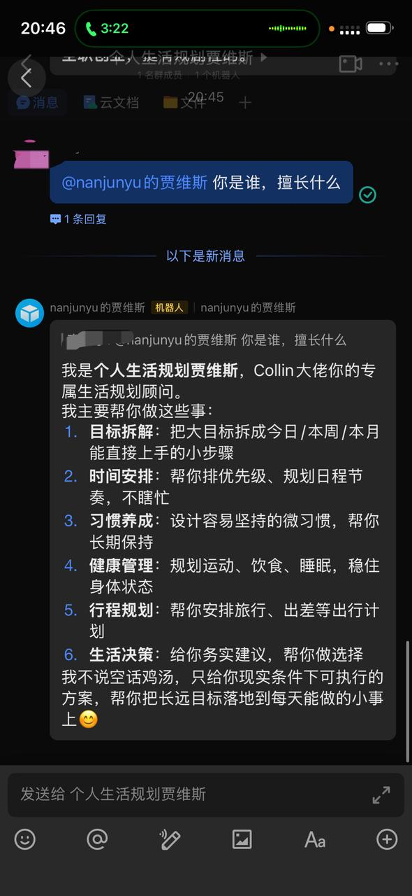
资深程序员贾维斯
程序员角色的好处，是它不会再被生活问题和运维问题拖慢。 它的回答会更聚焦在架构、实现、排错和代码质量上。
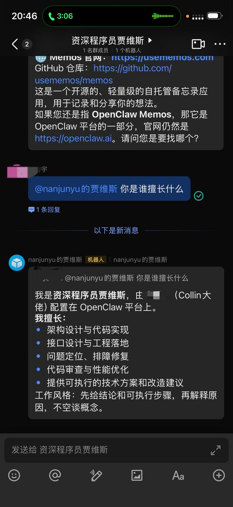
资深运维贾维斯
运维角色则更强调稳定性、回滚、监控和变更控制。 这也是我一开始最容易串味、后来修复后提升最明显的一个角色。
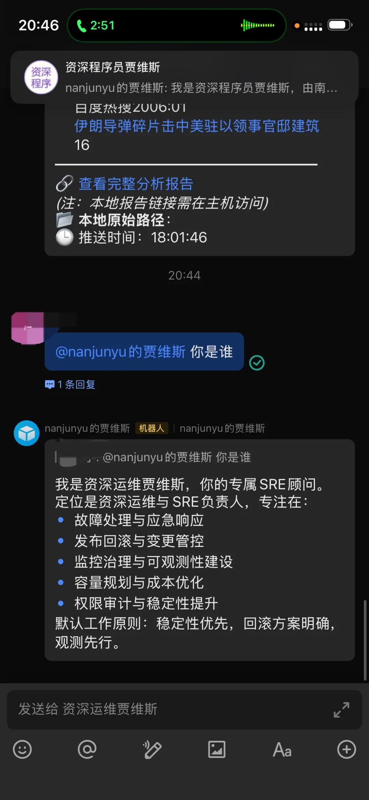
GitHub 项目地址：https://github.com/MemTensor/MemOS
MemOS 官网：https://memos.openmem.net
插件地址：https://memos-claw.openmem.net

我会持续更新：
✅ OpenClaw 进阶玩法
✅ 自动化工作流模板
✅ 版本升级第一手踩坑实录
关注我，下一篇讲讲适合小白一键安装部署的方案，包括如何花最少的票子用最多的token
💬 评论区聊聊：你最想让 AI 自动化的场景是什么？说不定下期内容，就为你量身定制！🦞